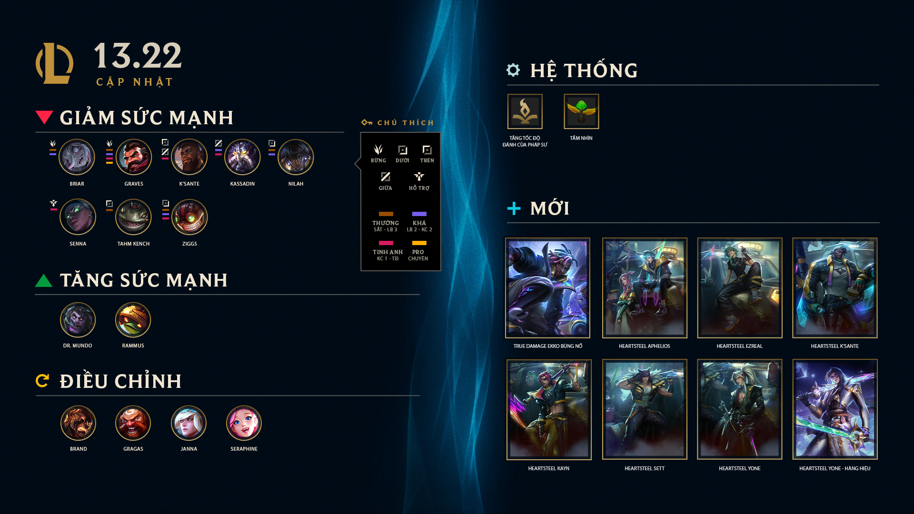

Chắc chắn bạn không hề hoang tưởng đâu, Phiên Bản 13.22 đã chính thức ra mắt rồi!
Ngoài những thay đổi cân bằng thông thường, phiên bản này mang đến hai cập nhật lớn:
Tinh chỉnh tốc độ đánh cho dàn tướng Pháp Sư
Chúng tôi nhận thấy nhiều tướng Pháp Sư có tốc độ đánh khá chậm và muốn đưa (hầu hết) tất cả
lên
một
mức
cơ sở mới về tốc độ đạn và độ nhạy của hoạt ảnh tấn công cơ bản. Đối với những tướng có kỹ
năng
thay
thế
đòn đánh thường như Karthus và Fiddlesticks thì sẽ có ngoại lệ. Bên cạnh đó, chúng tôi cũng
sẽ
tăng
tốc
độ đánh cơ bản ở cấp độ đầu cho một số tướng Pháp Sư thường sử dụng Ngọc Tốc Độ Đánh, không
có
những
tương tác mạnh mẽ với đòn đánh thường trong bộ kỹ năng và không có tốc độ đánh cao ở cấp độ
1.
Cập nhật bộ kỹ năng toàn diện cho Janna
Chúng tôi sẽ hồi sinh một số yếu tố trong bộ kỹ năng của Janna từ vài năm trước với mục tiêu
biến cô
nàng trở thành một người tham gia tích cực hơn trong trận đấu và ít phụ thuộc vào những cơn
lốc
tầm
xa.
Ngoài ra, trong phiên bản này, bạn cũng có thể thử sức với những trang phục Heartsteel mới
mẻ,
khám
phá
biến thể thần thoại mới Breakout True Damage Ekko và đón nhận sự thay đổi của Cửa Hàng Thần
Thoại.
Chúng
tôi cũng đã đưa ra một số điều chỉnh cho ARAM và Nexus Blitz để cân bằng hơn!
• Patch Highlights

• Điều Chỉnh Tầm Nhìn
Chúng tôi sẽ điều chỉnh tầm nhìn hiện lên khi tấn công từ sương mù trong Summoner's
Rift. Những người chơi giàu kinh nghiệm hiểu rằng việc tấn công từ trong bụi khiến
cho bụi rậm đó không còn tác dụng nữa và gần như không cần quan tâm, nhưng cũng gần
như không thể nào biết được bạn bị lộ diện trong bao lâu khi thực hiện những thao
tác thông thường như tấn công kẻ địch phía sau một bức tường. Điều này cũng đi kèm
một hệ lụy đó là đôi khi làm lộ diện những đồng đội đang ẩn nấp của bạn. Chúng tôi
sẽ cắt bớt bán kính lộ diện để giảm các tình huống làm lộ diện đồng đội, đồng thời
giảm thời gian lộ diện để việc trốn trở lại vào vùng sương mù trở nên mượt mà hơn.
Bán kính lộ diện khi tấn công: 400 ⇒ 300
Thời gian duy trì khu vực lộ diện: 4,5 giây ⇒ 2 giây
• Điều Chỉnh Tầm Nhìn
Nhìn chung, chúng tôi sẽ tiếp tục cải thiện hệ thống ping báo hiệu và hiện tại coi
như là chúng đã thành công theo những mục tiêu ban đầu. Chúng tôi đã thấy có sự cải
thiện đáng kể trong việc giúp người chơi cảm thấy được tôn trọng và an toàn hơn
trong trò chơi sau những thay đổi này và việc giới hạn đấu xếp hạng. Chúng tôi vẫn
đang cố gắng cân bằng giữa những tùy chọn giao tiếp tích cực và bảo vệ người chơi
khỏi những công cụ giao tiếp tiêu cực.
Ăn mừng thỏa thích: Trong 10 giây sau khi hạ một mục tiêu khủng, toàn bộ ping từ
đồng minh hướng đến tướng của bạn sẽ được hiển thị cho cả đội.
Hoàn trả bộ đếm thời gian khóa ping: 5 giây/15 giây/30 giây/60 giây/120 giây ⇒ 6
giây/12 giây/16 giây/20 giây/24 giây. Thay đổi này đã được áp dụng từ 13.19 nhưng
không được đưa vào ghi chú.
Ping "Cảnh Báo" và "Kẻ Địch Mất Dạng" chỉ có thể được sử dụng 3 lần trước khi bị
giới hạn tốc độ.
Những Lỗi Đã Biết Sau Khi Thay Đổi Ping Báo Hiệu
Gửi ping hồi chiêu trang bị, chiêu cuối hoặc Phép Bổ Trợ của đồng đội trên bảng điểm
khi hồi chiêu đã qua 50% sẽ hiển thị [Tổ đội] trước văn bản ping dù cho nó vẫn được
phát cho toàn đội.
• Điều Chỉnh ARAM
Tăng Sức Mạnh
Lilia: Sát Thương Gánh Chịu: 110% ⇒ 105%
Aphelios: Sát Thương Gánh Chịu: 100% ⇒ 95%
Giảm Sức Mạnh
K'Sante: Sát Thương Gánh Chịu: 90% ⇒ 95%
Tryndamere: Khả Năng Hồi Máu: 140% ⇒ 135%
• Sửa Lỗi & Nâng Cấp Chất Lượng Trải
Nghiệm
Sửa một lỗi khiến Nội Tại của Renata Glasc ngay lập tức tiêu diệt Zac khi một đồng
minh tấn công phân thân hồi sinh của Zac đang có nội tại bùa hại của cô.
Sửa một lỗi khiến Pix đôi khi ngăn người chơi Lulu nhận được mạng hạ gục.
Sửa một lỗi khiến nếu mục tiêu của chiêu R - Briar trở nên không thể chỉ định khi
phóng tới sẽ xảy ra ngắt kết nối hàng loạt.
Sửa một lỗi khiến mô tả chiêu W của Janna hiển thị thông tin không chính xác.
Sửa lỗi khiến chỉ báo nội tại của Kai'Sa và Braum bị chồng chéo lên nhau.
Sửa một lỗi khiến hiệu ứng hình ảnh tàng hình của linh thú đi rừng hiển thị với tất
cả kẻ địch, đồng thời làm lộ diện những tướng đang tàng hình.
Sửa một lỗi mô tả không chính xác của Cung Gỗ.
Sửa một lỗi liên quan đến ASU của Skarner, không thể nói cho bạn biết nó là gì nhưng
chúng tôi đã khắc phục nó, cứ yên tâm.
Sửa một lỗi khiến nếu Briar tiêu diệt Baron bằng Cắn Miếng Nào, cô sẽ nhận được chỉ
số tiêu diệt của tất cả các lính mang sức mạnh Baron.
Sửa một lỗi khiến Cuồng Huyết của Briar được tính là Khống Chế trong tóm tắt nguyên
nhân chết và tính vào điểm khống chế trong chỉ số sau trận đấu.
Sửa một lỗi khiến đòn đánh thường của Briar bị vô hiệu hóa sau khi thi triển Chiêu
Cuối.
Sửa một lỗi khiến bản sao của Neeko không hiển thị chính xác Vinh Danh 5 hoặc hoạt
ảnh Biến Về Thách Đấu.
Sửa một lỗi khiến Briar đôi khi tấn công đồng đội khi Hóa Cuồng.
Sửa một lỗi khiến Q của Varus luôn hiển thị chỉ báo đường bay kể cả khi cài đặt đã
bị tắt.
Sửa một lỗi khiến ngọn lửa của Jax Bóng Ma Hỏa Ảnh bị xếp sai vị trí trong hoạt ảnh
biến về.
Sửa một lỗi khiến Jax sẽ sử dụng hoạt ảnh tấn công mặc định khi dùng W nếu đang có
cộng dồn nội tại.
Sửa một lỗi khiến hoạt ảnh đánh thường từ chiêu W của Briar trên các tướng khác bị
chậm lại.
Sửa một lỗi khiến giao diện của Sylas hiển thị Chiêu cuối không chính xác khi Tước
Đoạt chiêu cuối của Neeko.
Sửa một lỗi khiến Hóa Cuồng của Briar kích hoạt mất kiểm soát nhấp nháy màn hình.
Sửa một lỗi khiến trang bị đi rừng có thể được thêm lại vào túi đồ sau khi biến đổi
nếu bạn sử dụng tính năng hoàn tác trong cửa hàng.